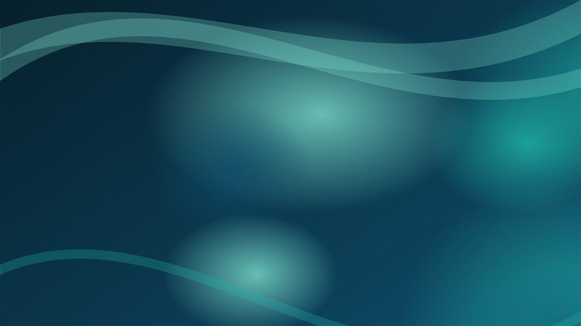
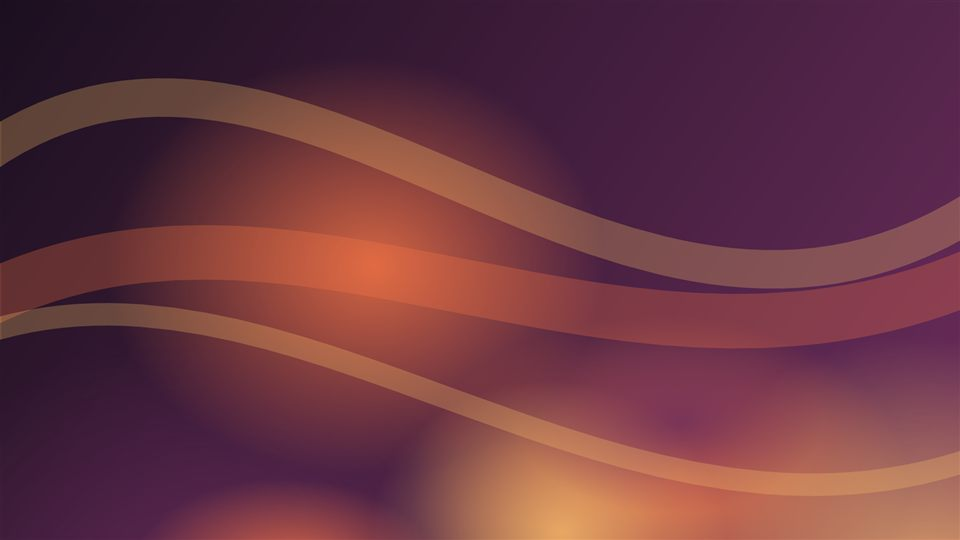
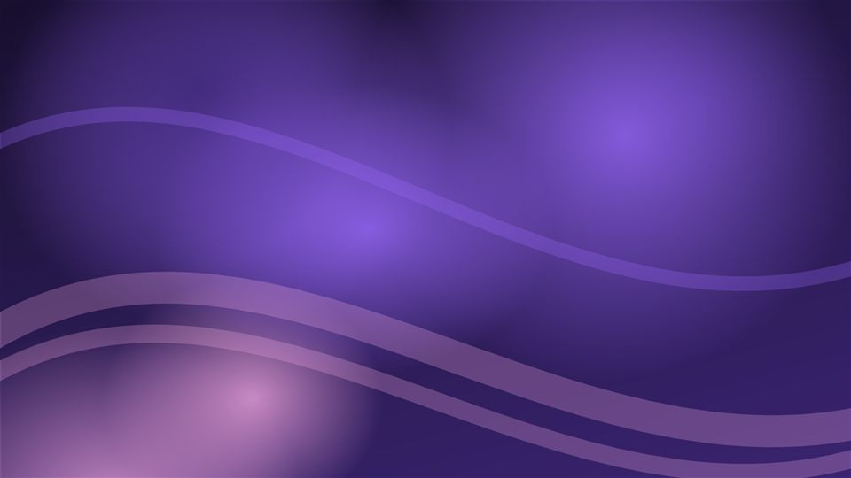
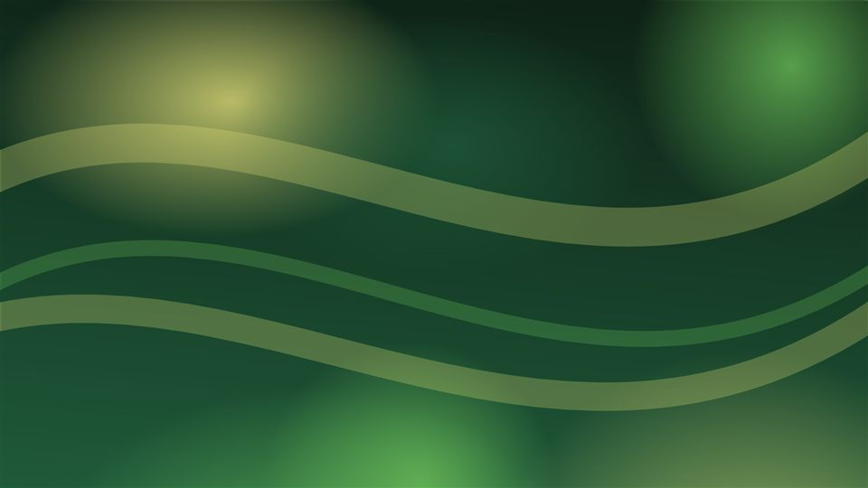
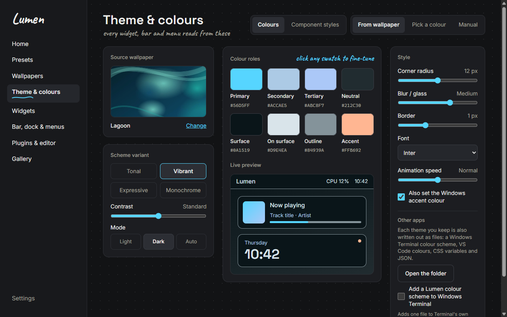
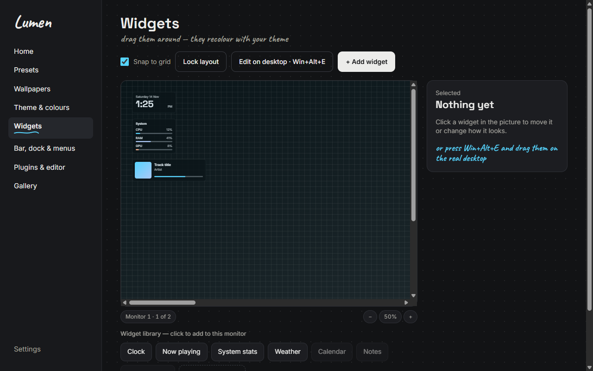
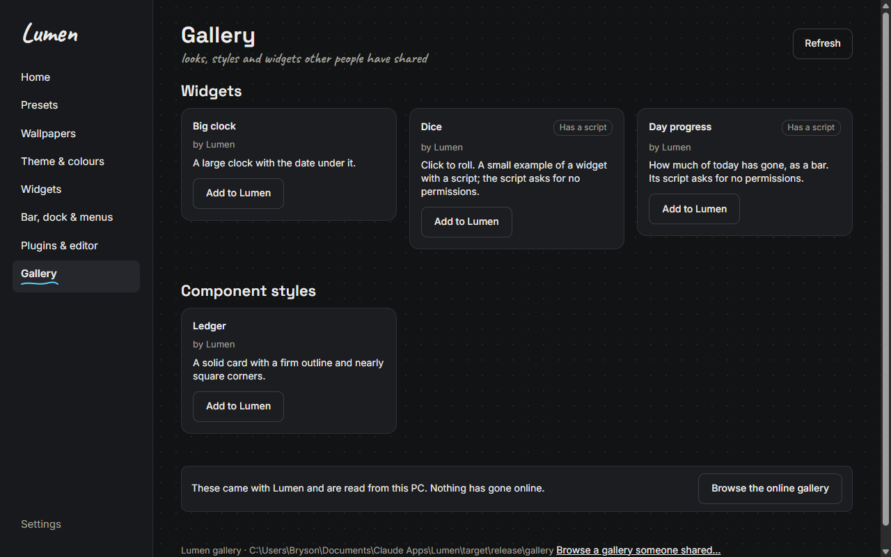

One theme for your whole Windows desktop.
Pick a wallpaper. Lumen makes a palette from it and uses it everywhere: desktop widgets, a status bar, the volume flyout, a launcher and the Windows accent colour.





A palette from any picture
Eight colour roles come out of your wallpaper, in tonal, vibrant, expressive or monochrome flavours, light or dark. Click any swatch to adjust it by hand.
Every change is tried on your real desktop for 15 seconds first. Keep it, or let it go back by itself.
click any swatch to fine-tune
Widgets you can take apart
Clock, system stats, now playing and weather, anywhere on any monitor. Each one is made of parts: every line of text, bar, ring, graph and icon can be moved, restyled or hidden.
- Design with the mouse, or edit the same widget as a readable YAML file.
- Component styles set how cards look once, for widgets, bar, flyout and launcher.
- Colours are always theme roles, so everything follows the next wallpaper.
Scripts, with your say-so
A widget can carry a small Luau script that reads a file, fetches a page or runs a program. Each script says what it needs, and it never runs until you have read that and allowed it. Change one character and Lumen asks again.
nothing runs until you allow it-- dice.luau: click the widget to roll local roll = math.random(1, 6) function update() return { roll = roll } -- shown as {script.roll} end function click(part) roll = math.random(1, 6) end

A gallery that starts on your PC
Lumen ships with a small gallery and reads it from your own disk. One button browses the online gallery, where people share widgets, styles and whole looks.
Made something good? “Offer it to the online gallery” packs it up. Each submission is looked at before it is listed.
Light on your PC, and it stays out of the way
Change the wallpaper.
Everything follows.
Windows 11 · MIT licence · updates itself from GitHub, and asks first